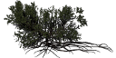

Le joueur sera un singe qui doit trouver son nid, récolter et manger des fruits, échapper aux prédateurs et aux flammes, les hommes souhaitant détruire la forêt. Il cherchera une compagne (ou un compagnon si c'est une femelle) et aura des petits à protéger. Les indiens le chasseront et le drogueront, ce qui provoquera un rêve un peu fou.
Le jeu sera simple au début, avec un seul animal qui doit rejoindre son arbre le plus vite possible tout en récoltant à manger. Ensuite, il y aura plus d'animaux et des quêtes.
L'objectif de départ est de faire un exemple pour le tuto de jam-jam68140, donc la simplicité et la progressivité des niveaux sont de mise, avec de jolis graphismes. Fichier zip : le code du tuto par Doudoulolita, avec les nouveaux graphismes. Il est encore trop tôt pour publier le tuto, qui n'est pas encore fini mais a déjà sa feuille de route.
A terme, le jeu doit être assez éducatif pour pouvoir s'insérer dans des animations multimédia à caractère scientifique. Une sorte de "serious game", donc.
Ces idées sont celles de Doudoulolita mais chacun peut en proposer d'autres.
Pour donner un coup de main à la réalisation de ce jeu, rendez-vous sur Openclassroom ou sur le forum Ubuntu.
Règles
Utilisez les flèches du pavé directionnel pour déplacer l'atèle sur le décor.
Testez l'exercice de l'éditeur de cartes du tuto en cliquant d'abord sur le tileset puis dans le 2ème canvas, et enfin dans le 3ème.
Inspirez-vous du code pour réaliser votre propre jeu, avec vos propres images. Publiez-le sous licence libre.
Profitez de l'occasion pour vous informer sur la faune et la flore de Guyane et voyagez virtuellement !
Personnages
Personnages joueurs
Les personnages joueurs sont des singes du nouveau monde. Le blog de Marie-Odile et Philippe donne des détails sur différentes espèces.
- Atèle : Il devrait être plus grand. Il est agile et rapide et peut se balancer à l'aide de sa queue. Il mange principalement des fruits, parfois des feuilles et des fleurs et peut jeter des branches contre les hommes, par ex. Des groupes de 4 à 8 individus se déplacent en file indienne.
- Capucin brun : plus petit, agile et vif, facile à observer, il a une queue préhensile. En plus des fruits, feuilles et fleurs, il mange des graines de palmier, des insectes, des petites grenouilles, oiseaux ou lézards mais se déplace peu. Il peut utiliser des cailloux ou des bouts de bois pour casser des noix. Il utilise des plantes pour se soigner. En bande de 10 à 20 individus, les capucins communiquent par des cris variés. Ils peuvent cohabiter avec le saïmiri.
- A faire : saïmiri.
- Il faudrait prévoir des vitesses et des animations bien différentes pour chaque classe (espèce) + males, femelles et petits.
Certains pourraient être en haut des arbres (donc ils ont la possibilité de passer dessus sans être bloqués) et sauter d'arbre en arbre tandis que les autres pourraient marcher par terre.
Actions actuelles prévues sur la spritesheet de l'atèle et du capucin: marcher, sauter, se baisser (dessus et profil)
- Un vieux singe peut enseigner des techniques et des connaissances à son disciple
Personnages non joueurs


- L'ara bleu est un PNJ qui annonce la mission à réaliser. Ce grand perroquet est très bruyant, et vit en couple au sein de petits groupes. Il niche dans des trous de palmier sec. Il se nourrit de graines et de fruits ainsi que d'argile (près des cours d'eau)
- Le jaguar est un ennemi grand et massif, avec des taches particulières, différentes pour chaque individu. Sa morsure est puissante, il attaque le crane de ses proies (mammifères, dont les singes, rongeurs, serpents, oiseaux...). Parcourant un grand domaine et marquant son territoire, il se repose très souvent et se baigne de temps à autre. On pourrait construire des pièges pour faire tomber le jaguar.
- Dans les rivières, les crocodiles peuvent manger les singes quand ils ont la machoire ouverte, mais ceux-ci leur échappent quand leur gueule est fermée.
- Pour visualiser les piranhas, le singe peut sacrifier un fruit.
- Les ennemis les plus dangereux seront les hommes, qui circuleront en véhicules sur les chemins uniquement. Ils mettront le feu à la forêt en occasionnant des dégats: trous de plusieurs cases, lignes d'arbres brulés...
- Les indiens, eux, chassent les singes pour leur peaux et ont des sarbacanes pour les droguer
- Un des boss humains peut être un milliardaire avec un bulldozer.
- Dans le rêve du singe, un dieu Jaguar apparaît, comme boss de fin de niveau (spoiler)
Decors et accessoires

- Chemin assez large pour les véhicules. Déjà réalisé avec Inkscape
- Sol de la forêt. Déjà réalisé avec Inkscape (avec fougères, feuilles de palmier jaunies)
- Arbres. Palétuvier, tucum et cacaoyer-rivière sont déjà réalisés avec Inkscape et avec Blender. Il faudrait peut-être des lignes d'arbres faciles à bruler.
- Rivières et lacs. Un lac a été déjà réalisé avec Inkscape, à revoir. Ne pas oublier une couche transparente pour voir crocodiles et piranhas
- Arbres et sol brulés
- Cachettes résistant au feu: rochers creux et cailloux de grosse taille. Peut-être aussi montagnes et grottes ?
- Nids de différentes tailles pour les singes (objet de quête). Dans la montagne, ils seraient protégés des flammes mais pas dans les arbres.
- Cabane et maison des humains
Bonus et trésors
- Nourriture : Fruits (apportent des points de vie). Ils seront placés dans l'inventaire. Awara (fruit du tucum) déjà réalisé avec Inkscape
- Fleur du cacaoyer-rivière déjà réalisée avec Inkscape
- Peut-être aussi termitière, car certains singes mangent les insectes (nécessite une brindille préparée correctement)
Armes
- Batons pour les singes, surtout pour attraper les fruits dans les arbres
- Pierres et crottes à lancer pour les singes
- lianes (lassos et grappins), armes volées aux indiens...
- Armure ou boucliers en écorce ou en lianes tressées que les singes doivent fabriquer
- Contenants : gourdes, sacs...
- Véhicules avec lance-flamme: jeep pour les ennemis humains et bulldozer pour le boss
- Sarbacane pour les indiens
- Utilisation magique des éléments naturels (vent, tornade, pluie)
Compétences
- Natation
- Précision des tirs
- Connaître la botanique (plantes qui guérissent, baies et fruits bonnes à manger, poisons...)
- Imiter le cri d'un autre animal et même connaître sa langue
- Fabriquer des objets (boucliers en lianes, grappins...)
Missions
- Ramasser le plus de fruits possibles dans la partie de la forêt qui va être rasée pour qu'elles ne soient pas gaspillées.
Les fruits donnent force et vitalité (éventuellement : rapidité plus grande, sauts plus longs). Le nombre de vies suplémentaires augmente avec un certain nombre de fruits et une seule fleur, par exemple. Ils peuvent aussi manger des feuilles mais elles apportent moins d'énergie. Certains singes attrapent aussi des termites avec une baguette mais je ne sais pas si c'est la cas des singes de Guyane. On retrouve la nourriture dans l'inventaire.
- Evacuer les animaux avant que la forêt ne soit rasée. En effet, le singe peut perdre une vie s'il est brulé.
Ils peuvent se cacher derrière un caillou qui empêche le feu d'avancer ou dans un rocher creux.
- Retarder les hommes qui détruisent la forêt pour laisser le temps aux joueurs de réaliser ces 2 missions.
Ces différentes missions peuvent être rassemblées sous formes de 4 épisodes de 2 à 6 maps:
- 1er épisode : Trouver un nid (objet de la quête) grâce à l'aide du perroquet (PNJ) sans se faire manger par les crocodiles (ennemi) et en récoltant des fruits pour avoir des points de vie.
- 2ème épisode: Trouver une compagne (ou son compagnon si on choisit une femelle!) et la protéger des flammes et des crocodiles pour rejoindre le nid avec elle.
- 3ème épisode: Quand arrivent les enfants, il faut changer de nid pour en trouver un plus grand et tous les protéger. Le boss de fin de niveau est un milliardaire avec un Bullldozer
- 4ème épisode : Les indiens chassent les singes pour leur peau. Ils les droguent avec leur sarbacane.
Bonus stage : le rêve du singe. Il y a de gros fruits qui donnent plein de points de vie et des pouvoirs spéciaux.
Les singes peuvent parler au perroquet et le boss de fin de niveau est le dieu Jaguar.
Au cours du rêve, le singe se retrouve dans les ruines du bagne de Cayenne avec des fantomes de prisonniers à combattre.
L'introduction des épisodes est faite par le perroquet sous forme de bulle ou de texte défilant (et il peut être très bavard). On le voit voler à travers l'écran au début et à la fin de la mission (gros plan au final ?)
Ces idées sont celles de Jamjam68140 et de Bobzeblob mais chacun peut en proposer d'autres.
Vue
L'idéal serait que le jeu soit en 3D isométrique ou même en vraie 3D mais c'est compliqué à coder. On a donc prévu que la vue de dessus se transforme en vue de profil ou de face selon la touche pressée. En effet, il faut alors que les animaux puissent grimper dans les arbres et sauter avec des lianes.
Le mode paysage semble plus adapté à la vue de profil, on l'utilisera donc sans doute pour tout le jeu.
Par exemple, dans une quête, on sera en vue de dessus quand on se promène et en vue de côté pour une course ou une tâche précise. Les joueurs seront en vue de dessus dans la partie jeu libre pour se rendre au point de rendez-vous du départ de la mission. Cela leur permettra de connaître la map (et donc la forêt)